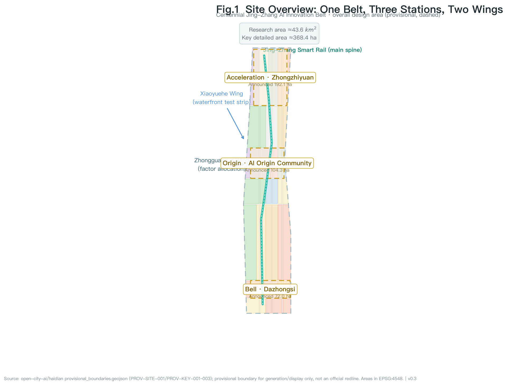
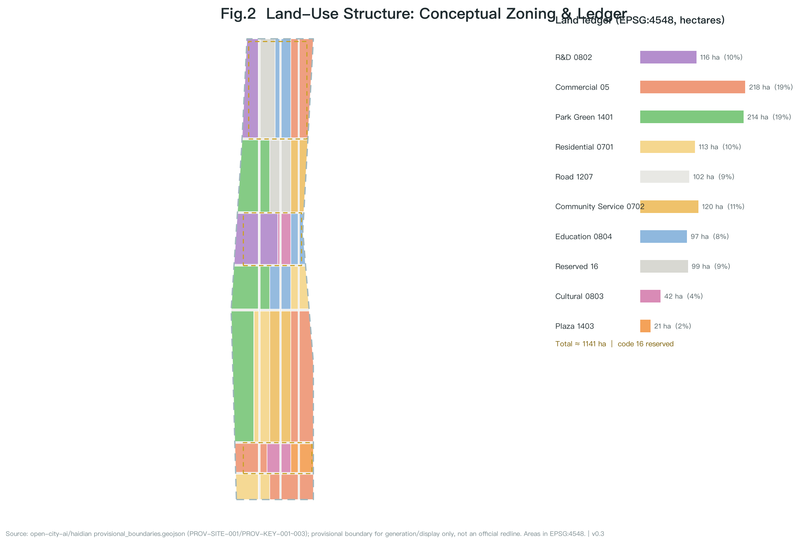
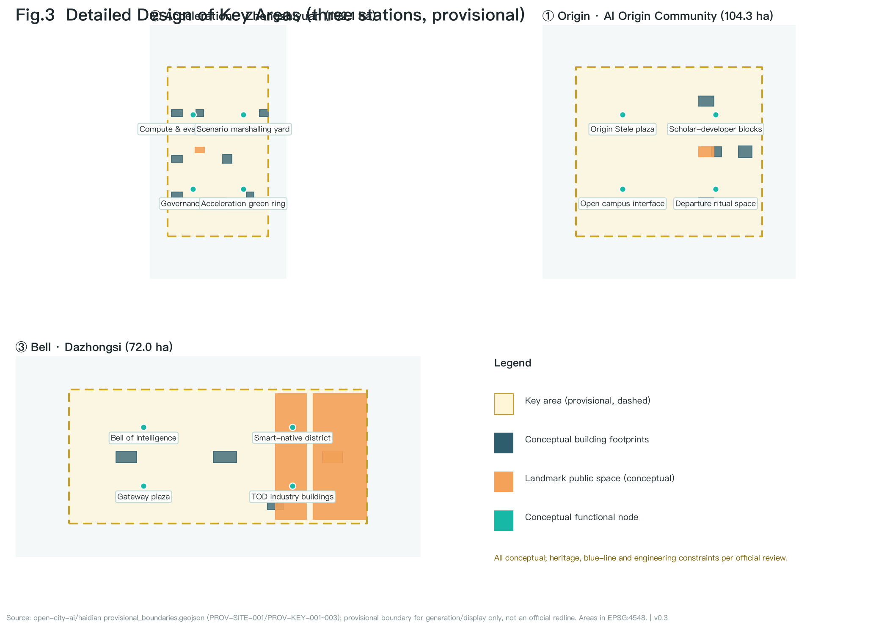
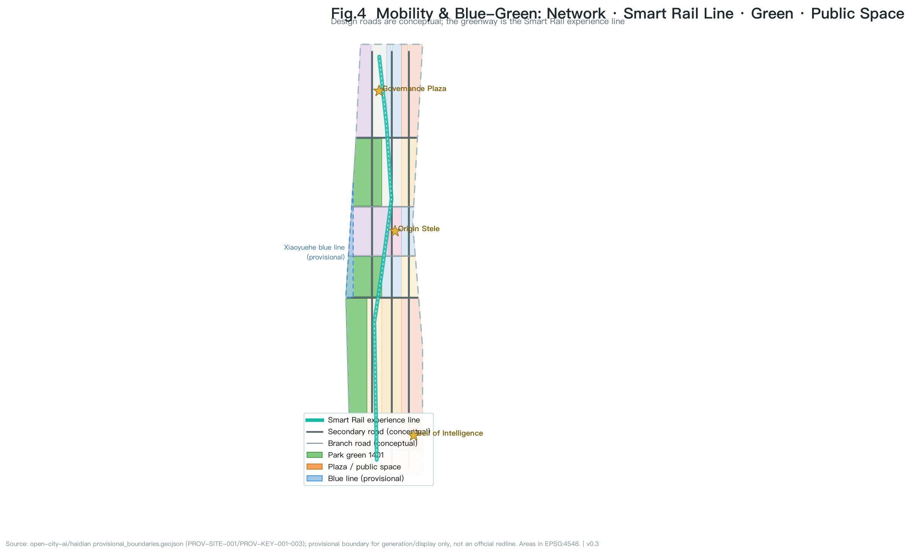
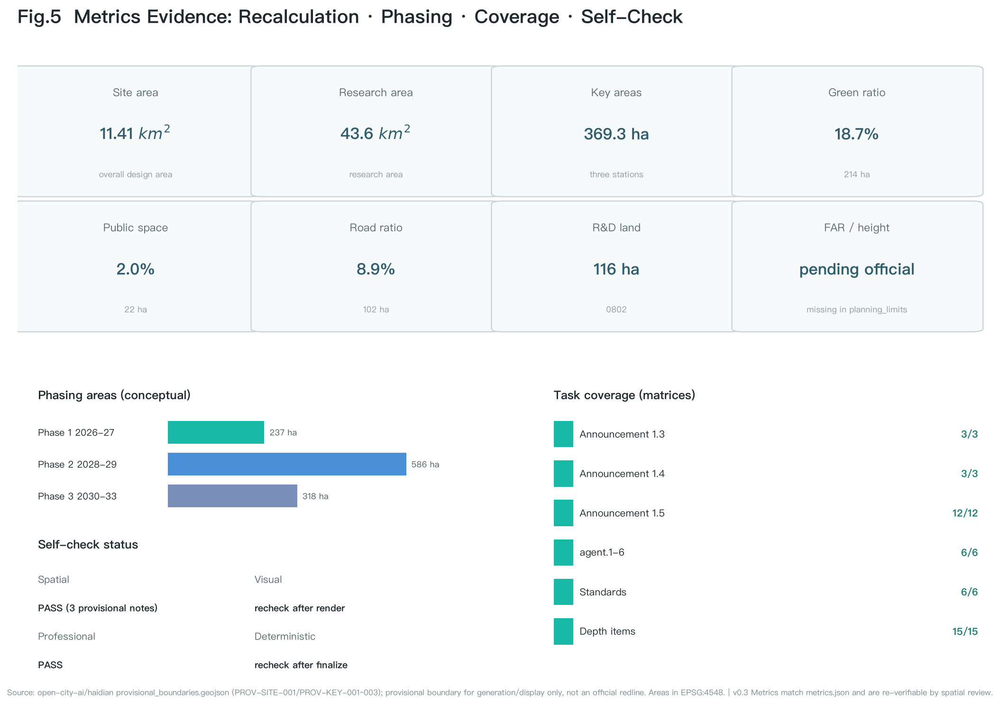

A Century on the Smart Rail — Urban Design for the Centennial Jing-Zhang AI Innovation Belt
Status statement: This proposal is AI-generated. Every spatial idea is a conceptual suggestion, reference scheme, or material for professional teams to deepen — not statutory planning, approval basis, engineering conclusion, investment commitment, or final retain-renovate-demolish judgment. Official precise redlines and planning controls are currently missing; the proposal uses the repository-registered provisional boundary and will be recalculated when official data arrives.
Design Basis and Source List
The primary basis is the prequalification announcement of the Centennial Jing-Zhang AI Innovation Belt international urban design open call issued by the Haidian Branch of Beijing Municipal Commission of Planning and Natural Resources source:OFFICIAL-ANNOUNCEMENT, together with the agent taskbook source:AGENT-TASKBOOK. Machine-readable design inputs come from the repository site package source:SITE-PACKAGE: design_brief.json (three scope levels, three positionings, five functions, twelve design tasks), agent_taskbook.json (six mandatory agent tasks, ten co-creation charters, unified boundary clause), allowed_design_space.json (editable/locked layers), ranges/planning_limits.json (official area facts and missing control indicators), enums/, schemas/ and visual_style_recommendations.json.
Source usage boundaries follow the public source registry source:SOURCE-REGISTRY and the repository processed fact pack source:PROCESSED-FACT-PACK: formal-ready sources support corresponding claims only; background material is not formal evidence; provisional material is used only for generation, display and intake self-check. The submitted site boundary derives from the maintainer-defined provisional boundary file source:BOUNDARY-SOURCE; the three key areas share the same source source:KEY-AREA-SOURCE. Both carry geometry_role=provisional_constraint and official_boundary=false, and must not serve as official redline, approval basis, precise-area basis or ownership boundary.
Professional standards: the official announcement requirements standard:PROJECT-OFFICIAL-ANNOUNCEMENT, the agent open-call taskbook standard:PROJECT-AGENT-OPEN-CALL-TASKBOOK, the urban design measures standard:MOHURD-URBAN-DESIGN-MEASURES, regulatory detailed planning compilation depth requirements standard:MOHURD-CONTROL-DETAILED-PLANNING, the national land-use classification guide standard:MNR-LAND-USE-CLASSIFICATION-GUIDE, and the architectural engineering design documentation depth requirements standard:MOHURD-ARCH-DESIGN-DEPTH-2016 (used to govern the expression depth of conceptual buildings and public space in key areas). The depth organization starts from depth:existing_conditions_diagnosis: the currently verifiable "existing conditions" are the announcement boundary description, provisional geometry, enums and metric framework; true surveying, ownership and regulatory conditions await official supply. Evidence entries also include data:SITE-001 and data:CON-HER-001; metric definitions: 11,412,842.3 m² and 43,609,232.6 m².
Three-Level Scope Framework
The announcement establishes a three-level scope system source:OFFICIAL-ANNOUNCEMENT; this proposal configures work depth as research — design — detailed design, with all three boundaries expressed as provisionally labeled geometry.
Coordinated research area (~43.6 km²): north to the 5th Ring Road, east to the Jingzang Expressway, south to Xizhimen Outer Street, west to Wanquanhe Road. Only industry and future-city research is performed at this level; the area fact uses the announced value with provisional recomputation 43,609,232.6 m².
Overall design area (~11.4 km²): the urban and industrial districts within 1-2 km of the Jing-Zhang Heritage Park. This level reaches a regulatory-plan-depth urban design framework: overall structure, land-use layout, intensity logic, blue-green network, mobility skeleton and renewal strategy; recomputed boundary area 11,412,842.3 m², boundary file data:SITE-001 explicitly labeled boundary_precision=provisional_rough.
Key detailed design area (~368.4 ha): from north to south — Zhongzhiyuan AI Independent Innovation Acceleration Area (announced 192.1 ha), Beijing AI Origin Community (announced 104.3 ha), Dazhongsi AI Industry Cluster (announced 72.0 ha). Conceptual detailed design at comprehensive implementation scheme depth; geometry in data:PROV-KEY-001, recomputed areas 3,692,893.0 m² and 3.
Methodologically the three levels follow depth:three_level_scope_framework: research informs design logic, design frames detailed design, detailed design back-checks the mid-level layout. Provisional precision limits are disclosed consistently across proposal, sources, assumptions and visual; when official geometry arrives, all geometry/*.geojson layers and all area/ratio metrics must be recalculated.
Coordinated Research Area: Industry and Future City Research
Overall concept: One Track, A Century Relay. In 1909 the Jing-Zhang Railway opened — the first trunk railway independently surveyed, designed and built by China. Today the same corridor carries an AI innovation belt. The proposal establishes "independent innovation" as the century-spanning geo-narrative spine and translates railway semantics (stations, rails, corridors, level crossings, timetables) into the belt's spatial grammar: the master name Jing-Zhang Smart Rail with a four-level naming system — belt (Jing-Zhang Smart Rail), stations (Origin / Acceleration / Bell Station), corridor (Smart Rail Corridor), nodes (Origin Stele / Bell of Intelligence / Tianyou New-Track). All names are original; no enterprise, park or trademark names are copied. Logo direction: a zigzag motif (abstraction of the switchback line + letter Z + data pulse), primary color Jing-Zhang teal, accent Smart-Rail glow. This responds to agent.1 standard:PROJECT-AGENT-OPEN-CALL-TASKBOOK.
Three positionings, five functions, three-areas-two-wings loop: the three positionings are the Centennial Jing-Zhang culture belt (carried by narrative and pilgrimage systems), the urban AI living-experience belt (carried by scenario cards and public space), and the AI-integration innovation belt (carried by the full-stack system and ecosystem mechanisms). The five functions are explicitly enumerated and mapped to chapters and spatial carriers below source:AGENT-TASKBOOK:
| Five functions (taskbook) | Carried by this proposal | Main spatial carrier |
|---|---|---|
| AI full-stack independent innovation system | Zhongzhiyuan Acceleration Station: compute/eval clusters, scenario marshalling yard, green compute | Zhongzhiyuan (192.1 ha) |
| World-class AI innovation ecosystem | Origin Community: scholar-developer mixed blocks, open-source market, researcher collaboration stations | Beijing AI Origin Community (104.3 ha) |
| AI+ scenario empowerment new paradigm | 12 Scenario Passports and the Departure Protocol (incl. 3 industry-test cards) | All three stations and two wings |
| Intelligent AI vibrant city | Urban AI living-experience belt: Smart Rail Corridor, smart-native commerce, waterfront test strip | Dazhongsi (72.0 ha) + Xiaoyuehe wing |
| Global AI governance voice | Governance Plaza, Bell Witness, model cards / algorithm registry, annual governance forum | Zhongzhiyuan Governance Plaza + Dazhongsi Bell of Intelligence |
The loop: ideas originate at the Origin Community → accelerate at Zhongzhiyuan → arrive in the city at Dazhongsi → factor allocation via the Zhongguancun wing → scenario validation along the Xiaoyuehe wing → feedback to the origin; spatialized in data:PHASE-01.
Global AI ecosystem case benchmarks (7 publicly verifiable cases): benchmarking extracts space-ecosystem-governance mechanisms only, without copying form or fabricating data. Each case is presented as a two-column contrast of "verifiable local translation" vs "explicitly not to be copied", with per-case sources source:CASE-SF-SOMA source:CASE-LONDON-KINGS-CROSS source:CASE-PARIS-STATION-F source:CASE-SG-ONE-NORTH source:CASE-SEOUL-DDP source:CASE-SZ-BAY source:CASE-ZGC-SELF-EVOLUTION; cases only show that a mechanism was publicly practiced — not that its performance, law or resources transfer — responding to agent.2, organized per depth:overall_spatial_structure and source:SOURCE-REGISTRY.
| Case (publicly verifiable) | Verifiable local translation | Explicitly not to be copied |
|---|---|---|
| San Francisco SoMa / Mission Bay source:CASE-SF-SOMA | Anchor institution + mixed-block "research-living" co-location → Origin Community scholar-developer mixed block | US land regime, rent structures, company lists |
| London King's Cross source:CASE-LONDON-KINGS-CROSS | Railway-heritage hub-gateway renewal with university linkage → Dazhongsi hub gateway + Bell of Intelligence | Concentrated ownership, international hub, landmark cloning |
| Paris Station F source:CASE-PARIS-STATION-F | Existing-fabric super-incubator conversion → renewal-first "point insertion" of innovation functions | Single-landlord operation model and building form |
| Singapore one-north source:CASE-SG-ONE-NORTH | Phased industry-city integration → "ignite—form—mature" three-phase framework | Single-developer regime and "built-equals-success" narrative |
| Seoul DDP source:CASE-SEOUL-DDP | Cultural-landmark-led innovation district → Bell of Intelligence "ancient bell—new bell" cultural-tech landmark | Landmark form and influencer-style operation |
| Shenzhen Bay source:CASE-SZ-BAY | HQ cluster with public-space quality → public space as the means of innovation production | HQ morphology and land-use ratios |
| Zhongguancun's own evolution source:CASE-ZGC-SELF-EVOLUTION | From electronics street to innovation origin → respect indigenous paths, no top-down master plan | Turning history into a fixed replicable formula |
Regional synergy matrix (responding to review dimension regional_synergy) source:AGENT-TASKBOOK source:PUBLIC-REGIONAL-CONTEXT: Haidian's AI belt is not an island; competitiveness depends on interface quality with municipal and Jing-Jin-Ji innovation nodes. The matrix uses "complementary capability — spatial interface — data/IP boundary"; all conceptual, no administrative boundaries or investment commitments:
| Partner | Complementary capability | Interface and factor flows | Data/IP boundary |
|---|---|---|---|
| Beiwai community source:AGENT-TASKBOOK | Youth-oriented living and community scenario trials | Xiaoyuehe wing north extension; commute and community pilot interfaces | No personal data sharing; authorized and anonymized trials |
| Future Science City source:PUBLIC-REGIONAL-CONTEXT | Basic research and frontier science facilities | Research collaboration interface with Zhongzhiyuan evaluation/compute clusters | Institutional agreements; data stays in-domain |
| Huairou Science City source:PUBLIC-REGIONAL-CONTEXT | Big-science facilities and original innovation | Corridor interface between Origin "idea origination" and research translation | Outputs/IP by agreement |
| E-Town (Beijing Economic-Technological Development Area) source:PUBLIC-REGIONAL-CONTEXT | Intelligent manufacturing and industrial landing | Southbound interface: Dazhongsi "arrival monetization" and industrial uptake | Industrial data under authorized use |
| Jing-Jin-Ji coordination source:PUBLIC-REGIONAL-CONTEXT | Regional talent, scenarios and markets | Belt-wide exhibition and annual-event regional radiation interface | Public outputs reusable; classified/non-public data excluded |
| Zhongguancun Science City (this belt) source:CASE-ZGC-SELF-EVOLUTION | Existing tech-service factors: IP, capital, legal | Directly carried by Zhongguancun tech-service wing | Follows source_registry usage boundaries |
The regional synergy matrix is also written into compliance_matrix (agent.2), the visual page and drawings as a deepen-able interface list.
Future-city assessment: AI new-quality productive forces change the "interface" of space, not the "essence" of cities — talent density, walkability, public-space quality and scenario accessibility remain decisive. Three design principles follow: renewal-first, scenario-as-infrastructure, public space as the means of innovation production.
Overall Design Area: Urban Renewal and Regulatory-Plan-Level Urban Design
The overall design area is organized as a regulatory-plan-depth urban design framework standard:MOHURD-CONTROL-DETAILED-PLANNING standard:MOHURD-URBAN-DESIGN-MEASURES; outputs are conceptual zoning and structure, not statutory plan documents.
Overall spatial structure: one belt, three stations, two wings. The Smart Rail belt runs north-south along the heritage park corridor; three stations sit on the belt; two wings provide factors and scenarios east and west. Structure logic per depth:overall_spatial_structure; geometry expressed in the land-use layer data:LU-001 within data:SITE-001 (every feature carries land_use_code, source_type, confidence, geometry_role; classification follows standard:MNR-LAND-USE-CLASSIFICATION-GUIDE).
Land-use layout (conceptual zoning): the area is partitioned into gap-free, overlap-free zones — research land 0802 concentrated in the Zhongzhiyuan and Origin cores 1,163,123.7 m²; commercial land 05 along the Dazhongsi hub and gateways 2,175,842.1 m²; urban residential 0701 preserving community fabric while adding talent housing 1,133,053.8 m²; road land 1207 forming the design network 1,016,947.9 m² 1,016,947.9 m² 8.9%; park green 1401 along the corridor and between clusters 2,139,223.1 m² 18.7%; plaza land 1403 hosting gateway and landmark public space 222,997.7 m² 2.0%; reserved land 16 held strategically for full-stack new infrastructure and future functions. Building footprints are conceptual 121,546.9 m² 1.1%, layer data:BLDG-Z01.
Intensity and character logic: official FAR, height, density and setback controls are missing in planning_limits.json; the proposal marks them "pending official confirmation" depth:development_intensity_controls depth:height_massing_character. Intensity follows TOD gradients (higher near the hub, tapering along the corridor) and heritage-sensitive reduction, with no numeric commitments. Retain-renovate-demolish logic is renewal-first with point insertions depth:retain_renovate_demolish, with no parcel-level conclusions.
Detailed Design of Key Areas
Each key area forms a complete mini-scheme: positioning, spatial structure, renewal strategy, mobility, public space, AI scenarios, implementation risks depth:three_key_area_detailed_design; geometry data:PROV-KEY-002 and data:PUBLIC-P01.
① Beijing AI Origin Community (Origin Station, announced 104.3 ha): positioned as the "first scene" of a world-class AI innovation ecosystem. Strategies: the Origin Stele plaza as pilgrimage origin (conceptual public space PUBLIC-P01); scholar-developer mixed blocks via existing-interface activation; open campus interfaces with lecture strips and pitch corners; departure-ceremony space for annual community ritual. Scenarios: AI tutoring blocks, open-source market, researcher collaboration station. Risks: campus boundary policies and existing property rights — pending professional confirmation.
② Zhongzhiyuan AI Independent Innovation Acceleration Area (Acceleration Station, announced 192.1 ha): the "locomotive depot" of the full-stack independent system and the voice of AI governance. Strategies: compute-and-evaluation clusters hosting green compute, evaluation sandbox and alignment labs (functional suggestion); a scenario marshalling yard for test validation dispatch; a governance plaza for international dialogue; an acceleration green ring separating clusters. Conceptual massing data:BLDG-Z01. Scenarios: LLM evaluation sandbox, robotics proving ground, autonomous-shuttle test segment (the three industry test/validation cards concentrate here). Risks: siting and energy constraints of new infrastructure need specialized studies.
③ Dazhongsi AI Industry Cluster (Bell Station, announced 72.0 ha): the "arrival experience field" of smart-native business formats. Strategies: the Bell of Intelligence landmark in dialogue with Juesheng Temple's ancient bell (heritage constraints strictly respected; conceptual avoidance in data:CON-HER-001); a smart-native business district around the hub; a gateway plaza carrying the arrival narrative; TOD-organized industry buildings (intensity pending official controls). Scenarios: smart-native commerce, AI cultural tourism guide, urban vital signs. Risks: heritage control-zone requirements and hub crowd management need specialized review.
Three spatial prototypes (conceptual, responding to spatial_clarity and planning innovation): each station offers one prototype a professional team can deepen — ① Origin Community (Origin Station) "public ground floor, shared platforms": ground floors host open-source review, demo corners and showcase windows; upper floors host research and incubation — an "open-source below, research above, showcase along the street" vertical mixed section (conceptual section, consistent with the existing-fabric interface activation of data:BLDG-O01); ② Zhongzhiyuan (Acceleration Station) "open engineering yard in a garden": evaluation and compute clusters enclose bookable test courtyards; research buildings open ground-floor visualization interfaces to developers and the public; the acceleration green ring separates clusters to avoid a mega-campus (per data:BLDG-Z01 cluster schematic); ③ Dazhongsi (Bell Station) "four-quadrant station-city interface": around the hub, four quadrants organize industry towers, smart-native commerce, the gateway plaza and the Bell of Intelligence cultural node; ground floors preserve non-consumptive stay and direct pedestrian access (per data:PUBLIC-P01 and TOD intensity logic, intensity pending official controls). All three prototypes follow the baseline "public ground floor, shared platforms, livable access, controlled testing, legible heritage" and make no block-level conclusions.
AI Innovation Ecosystem, Personas, and AI+ Scenarios
This chapter responds to agent.3 with 12 scenario cards (including 3 industry test/validation scenarios), 5 personas, and the scenario-space-operation mapping with privacy boundaries. Card-to-registry mapping is declared in the front matter scenarios field.
Scenario cards (12): S01 AI tutoring block (Origin Community, livelihood); S02 open-source market (Origin Community, ecosystem); S03 researcher collaboration station (Origin Community, research); S04 LLM evaluation sandbox (Zhongzhiyuan, industry test ★); S05 robotics proving ground (Zhongzhiyuan, industry test ★); S06 autonomous shuttle test segment (Smart Rail belt, industry test ★); S07 scenario dispatch center (Zhongzhiyuan, governance); S08 smart-native business district (Dazhongsi, consumption); S09 urban vital signs (belt-wide, governance); S10 Jing-Zhang cultural AI guide (Smart Rail belt, tourism); S11 waterfront scenario test strip (Xiaoyuehe wing); S12 community AI health station (Origin/Dazhongsi, livelihood). Each card specifies spatial mapping, users, data needs, privacy boundary, human-review mechanism, operator suggestion, risks and exit conditions — and is upgraded to a Scenario Passport with six operational fields: admission criteria, RACI (who operates / who supervises / who is the fallback), KPIs and evaluation cycle, stop thresholds and pause conditions, appeal and withdrawal channels, and data retention period with deletion obligation. The 12-card six-field matrix follows (S04/S05/S06 industry-test cards carry full run cards additionally):
| Card | Admission | RACI summary | KPI (illustrative) | Stop threshold / pause | Appeal & withdrawal | Data retention |
|---|---|---|---|---|---|---|
| S01 AI tutoring block | Institution-led + parental consent | School operates / district supervises / teachers fallback | Term satisfaction, participation | Privacy complaint or safety incident → stop | Parent & school dual channels | Deleted end of term |
| S02 open-source market | Open registration + OSS license statement | Community committee + operator | Projects, conversions | Order risk → pause | Organizer channel | No personal data collected |
| S03 researcher station | Inter-institutional agreement | University alliance + operator | Compute utilization, outputs | Data violation → stop | Institutional appeal | Destroyed per agreement |
| S04 LLM eval sandbox ★ | Third-party application + red-team vetting | Evaluator runs / governance committee supervises / safety officer fallback | Reports, fix rates | Major safety event → stop | Public appeal + review | Isolated, retained |
| S05 robotics proving ground ★ | Enclosed site + safety assessment + insurance | Operator / safety regulator / emergency fallback | Task success, incident rate | Incident → stop + postmortem | On-site + written appeal | Anonymized sensor data |
| S06 autonomous shuttle ★ | Speed/segment limits + regulatory sandbox permit + safety attendant | Operator / traffic police / attendant fallback | Ridership, takeover rate | Takeover rate over limit → stop | Passenger & public channels | Trip data deleted after period |
| S07 scenario dispatch center | Open application + review trail | Operator + third-party review | Scenarios, graduation rate | Review violation → pause | Appeal + review | Applications retained limited-term |
| S08 smart-native district | Merchant compliance + informed consent | District operator + market regulator | Experience score, complaints | Data violation → stop | Consumer complaint channel | Minimal consumption data |
| S09 urban vital signs | Statistical caliber + anonymization review | Government data office + third-party audit | Coverage, accuracy | Anonymization failure → stop | Public data objection channel | Statistics only, no individual identification |
| S10 cultural AI guide | Content review + history expert check | Culture department + operator | Usage, correction rate | Factual error → freeze update | Visitor feedback channel | No location data stored |
| S11 waterfront test strip | Ecological avoidance review + device disclosure | Water authority + subdistrict + operator | Pilots, ecological impact | Ecological impact → stop | Resident feedback channel | Anonymized sensing data |
| S12 community AI health station | Licensed institution + voluntary | Medical institution + subdistrict + practitioners fallback | Service count, satisfaction | Medical incident → stop | Resident appeal + doctor-patient channel | Minimal retention of health data |
Personas (5+1): university researchers (compute and translation pathways); AI developers/entrepreneurs (scenarios and community belonging); industry engineers (test environments and standards); nearby residents (quality of life and participation); international visitors (understanding and partnership); plus a 6th persona non-digital users / people with reduced mobility (accessibility, equivalent human-window channels, opt-out rights). Personas drive spatial allocation: the Origin serves researchers and developers, Zhongzhiyuan serves engineers and testing, Dazhongsi serves residents and visitors. Each persona carries a "public-interest boundary" so ordinary people are not obscured by an "AI talent" narrative:
| Persona | Core needs | Main touchpoints | Public-interest boundary |
|---|---|---|---|
| University researchers | Compute, data, translation | Collaboration stations, eval sandbox | Fair cross-institution access; data stays in-domain |
| AI developers/entrepreneurs | Scenarios, capital, belonging | Open-source market, Origin Stele, dispatch center | Open admission and pricing; not serving only top firms |
| Industry engineers | Test environments, standards, talent | Proving grounds, governance plaza | Tiered test permits; safety never downgraded by "sandbox" |
| Nearby residents | Quality of life, participation, not being disturbed | Health station, waterfront, Bell of Intelligence | Non-consumptive stay preserved; opt-out and detour |
| International visitors | Understanding China's AI ecosystem, partnership | Smart Rail experience line, governance forum | Multilingual, accessible, verifiable narrative |
| Non-digital users / reduced mobility | Equivalent service, not excluded | Human windows, audio guide, accessible routes | Non-digital alternatives, human fallback, complaint & withdrawal |
Accessibility and inclusion (responding to public_interest_inclusion) source:AGENT-TASKBOOK: accessible slow-mobility routes and audio guides along the Smart Rail experience line; every smart pole and guide post provides an equivalent human-window channel; scenario cards default to "non-digital alternative" and "opt-out / detour" options; quarterly public-issue sessions and appeal channels are written into every card; vulnerable groups (elderly, children, people with disabilities, low-income and non-digital users) are explicitly covered as personas and scenario boundaries to avoid digital exclusion from a tech-first narrative.
Privacy and human-review principles: data minimization, purpose limitation, opt-out, human takeover, no fully automated sensitive decisions — written into every scenario card, keeping the design inside agent.3's anti-surveillance redline. Spatial mapping: data:PUBLIC-P02 and data:ROAD-GW01.
Land Use, Building Scale, and Retain-Renovate-Demolish Strategy
This chapter converts the land-use layout into a recomputable ledger; all areas are recomputed from GeoJSON under EPSG:4548, consistent with metrics.json depth:land_use_layout depth:metrics_recalculation.
Land-use ledger (conceptual zoning, recomputed): research land 1,163,123.7 m² sqm; commercial 2,175,842.1 m² sqm; urban residential 1,133,053.8 m² sqm; road land 1,016,947.9 m² sqm (= 1,016,947.9 m², ratio 8.9%); park green 2,139,223.1 m² sqm (ratio 18.7%); plazas/public space 222,997.7 m² sqm (ratio 2.0%). The partition data:LU-001 satisfies full-coverage, no-overlap topology and is verifiable by the repository spatial review.
Building scale: conceptual footprint total 121,546.9 m² sqm, footprint density 1.1% (conceptual caliber only, not a statutory density control). Total floor area and FAR are uncomputable without official controls and are marked unknown. Footprints carry type labels (AI R&D, lab, incubator, education, talent apartment, retail, cultural, mobility hub, existing retained); layer data:BLDG-O01.
Retain-renovate-demolish (directional): retain — existing residential fabric and heritage resources retained rigidly; renovate — existing industrial/commercial interfaces via functional replacement and activation; demolish — no parcel-level demolition conclusion (no ownership or survey basis); new-build — new infrastructure and landmark public buildings inserted as points, siting pending specialized studies. Per depth:retain_renovate_demolish and the unified boundary clause.
Transport, Rail, Municipal Infrastructure, and Public Services
Transport and rail: the corridor relies on existing rail stations (Dazhongsi station etc., per public information) as arrival/departure anchors; the design network is a conceptual three-vertical-six-horizontal secondary/branch system data:ROAD-V01 with total centerline length 43,457.6 m (≈43.5 km) and a submitted-scope density of ≈3.8 km/km², including about 8.4 km of Smart Rail greenway — the value expresses network relations and a feasibility anchor only, not road redlines or engineering alignments; road surfaces in data:LU-R001 (code 1207). The Smart Rail experience line combines slow-traffic priority with low-speed autonomous shuttles (test-segment logic, regulatory-sandbox precondition) data:ROAD-GW01. East-west stitching adds pedestrian/cycle-friendly crossings at key sections (conceptual; no bridge/tunnel engineering conclusions). Organization follows depth:traffic_rail_slow_parking: consolidated hub parking, pedestrian priority, short-distance transfers.
Municipal and new infrastructure: directional only — energy/cooling for green compute, power/comms for sensing, co-mounted smart poles in public space, all conceptual depth:municipal_new_infrastructure. No utility-routing conclusions (no existing utility data).
Public services: community service land 0702 follows existing communities data:LU-001; the AI health station (S12) embeds in community services with an explicit "assist-not-replace, licensed-professional review" boundary; education land 0804 serves campus linkage and talent training. Facility standards await official confirmation.
Blue-Green Network, Public Space, and Urban Character
Blue-green network: park green 1401 forms a "one belt, one ring, many points" green network — the Smart Rail green spine, the Zhongzhiyuan acceleration green ring, and pocket parks; total green 2,139,223.1 m² sqm, ratio 18.7%, layer data:GREEN-001. The Xiaoyuehe blue line is a provisional indication data:CON-WAT-001; waterfront scenarios avoid it by default pending official confirmation. Organization per depth:blue_green_public_space.
Public space system: plazas and landmark public space total 222,997.7 m² sqm, ratio 2.0%, layer data:PUBLIC-P01: gateway plaza (Dazhongsi), Origin Stele plaza, Bell plaza, governance plaza, and corridor way-stations.
AI pilgrimage landmarks (3+1): ① Origin Stele (AI Origin Community) — geodetic-origin imagery with an updatable milestone chronology and developer check-in ritual; ② Bell of Intelligence (Dazhongsi) — an AI co-created sound installation in historical dialogue with Juesheng Temple's ancient bell, with an honorary bell-ringer system; ③ Smart Rail Corridor (heritage park corridor) — rails transformed into light bands with mileage honor columns displaying annual contributors. Optional ④ Tianyou New-Track node (1909 and 2026 told side by side). All landmarks respect agent.4 boundaries: no heritage/blue-line violations, no engineering conclusions, no over-entertainment. The honor display system is three-tier — belt level (Origin Stele inscriptions), station level (bell-ringers), node level (mileage columns) — based on publicly verifiable achievements.
Urban character: the narrative is "industrial memory × academic temperament × intelligent glow" — Jing-Zhang teal as base tone, Smart-Rail glow as accent; wayfinding translates railway components (rails, sleepers, signals, mileage posts) into modern elements, with belt-wide "Smart Rail mileage" notation — responding to agent.5.
Renewal Projects, Implementation Policy, and Phasing
Renewal project list (conceptual): P1 Origin Stele plaza and departure-ceremony space; P2 Smart Rail experience line demonstration segment; P3 open-source market permanent venue; P4 evaluation sandbox and scenario dispatch center; P5 Bell of Intelligence and gateway plaza; P6 smart-native district interface renovation; P7 waterfront scenario test strip. All conceptual, not implementation commitments.
Phasing (three phases) depth:phasing_implementation: Phase 1 Kick-off (2026-2027) focuses on the Origin Community demonstration, area 2,370,154.9 m² sqm, data:PHASE-01; Phase 2 Belt Formation (2028-2029) covers Zhongzhiyuan and the full Smart Rail line, area 5,861,693.0 m² sqm, data:PHASE-02; Phase 3 Maturity (2030-2033) completes the Dazhongsi bell segment and belt-wide network, area 3,180,994.4 m² sqm, data:PHASE-03.
Policy instruments (directional): scenario list system (publish — apply — review — time-limited test — evaluate and graduate), scenario vouchers, developer points and badges, dual-track community governance (self-governance committee + professional operator). Event system: spring AI Departure Day, summer Open-Source Week, autumn Global AI Governance Forum, winter Bell Festival, year-round scenario open days — all conceptual, not confirmed arrangements. Developer conversion path: market projects → incubation linkage → scenario testing → deployment. This responds to agent.6, with no government commitments or confirmed investment arrangements.
Operation protocol: the Departure Protocol source:AGENT-TASKBOOK depth:phasing_implementation. To upgrade the scenario list system from a mechanism name into a nameable, checkable, iterable operation loop, this proposal binds the railway semantics of "marshalling — test — departure — arrival" to scenario-open operation as a six-step protocol: Issue → Review → Sandbox (time-limited test) → Bell Witness (public witnessing with third-party review) → Depart (into the city) → Postmortem, plus a seventh Rollback step for pause, withdrawal and site restoration. The protocol binds to the three stations and two wings: the Origin Community hosts "Review" (ideas and provenance), Zhongzhiyuan hosts "Test" (controlled validation), the Bell of Intelligence at Dazhongsi hosts "Bell Witness" (public witnessing and honor records), and Xiaoyuehe hosts "back-testing" (real-use feedback flowing back). The whole loop is publicly traced, appealable and exitable, and human final judgment overrides automated decisions at every step (Human Override), honoring co-creation charter.7 and agent.3's human-review redline.
Implementation governance and risk response (responding to implementation_feasibility and risk_compliance) source:AGENT-TASKBOOK depth:phasing_implementation depth:renewal_project_list:
- Per-project entry/exit gates (P1–P7): every renewal project has an entry gate (prerequisites, hosting body, budget source and permit procedure complete before start) and an exit gate (pause or withdraw if KPIs unmet, safety incident, public veto, or postmortem conclusion triggers). Example: P1 Origin Stele Plaza (entry: heritage and site permits; exit: disclosure veto or structural-safety risk); P4 evaluation sandbox (entry: safety assessment + third-party review; exit: stop on major safety event).
- Named human-review roles: professional planning team (spatial and regulatory caliber), transport specialists (connectors and test segments), heritage authority (Bell of Intelligence and heritage control zone), data-security and legal-compliance (scenario passports and data retention), community representatives (public participation and appeal ledger), third-party review (Bell Witness) — role recommendations, not designated institutions.
- P0/P1/P2 response targets (conceptual): P0 life/serious safety incident — immediate stop + response within 15 minutes + postmortem within 24 hours; P1 data or privacy event — handled within 4 hours with affected-party notification; P2 general complaints and appeals — acknowledged within 48 hours with a trail. Targets are operational suggestions, not service commitments.
- Conditional cost envelope (conceptual, not investment commitment): organized in three tiers — low-cost reversible pilots first → medium demonstration segments → belt-wide network; Phase 1 focuses on lightweight pilots, Phase 2 forms demonstration segments, Phase 3 reaches network level; specific amounts and funding sources are determined by professional teams and relevant bodies per law; this proposal fabricates no investment figures.
- Model cards / algorithm registry (Model Passport): every "Bell Witness" requires a model card — purpose, data sources and retention, responsible body, human-review method, exit and restoration conditions — registered in a public (anonymized) ledger as precondition for departure into the city; together with scenario passports these form an auditable AI governance archive.
AI city-form translation (responding to ai_planning_innovation) source:AGENT-TASKBOOK: AI new-quality productive forces land in urban form as three perceptible classes of change — ① Buildings: bookable shared labs, open-source review and industry-exchange spaces (Origin collaboration stations, Zhongzhiyuan evaluation clusters); ② Streets: Smart Rail experience-line slow-mobility spine + east-west stitching crossings + accessible equivalent human channels (Xiaoyuehe test strip, the 3-vertical-6-horizontal network); ③ Governance: scenario passports + stop thresholds + refusal lists + failure archives (Departure Protocol and Bell Witness). All three classes bind to layers, metrics and scenario cards, avoiding "AI as sticker on tech icons".
Metrics, Area Recalculation, and Compliance Matrix
Metric caliber: all metrics are recomputed from submitted geometry under EPSG:4548 (CGCS2000 3-degree zone), with formulas and source files recorded in metrics.json depth:metrics_recalculation. Core values: site area 11,412,842.3 m² sqm (announced 11.4 km²; provisional recomputation within announcement precision); research area 43,609,232.6 m² sqm; key-area total 3,692,893.0 m² sqm, count 3. Ratios 18.7%, 2.0%, 8.9%, 1.1% all fall within 0-1 and are re-verifiable by spatial review.
Unknown metrics: FAR, building height and official green ratio are missing in planning_limits.json; metrics.json marks them status=unknown with reasons and required_for_formal_submission, listed as risks pending confirmation — no speculation.
Compliance matrix: compliance_matrix.json covers announcement 1.3.1-1.3.3, 1.4.1-1.4.3, 1.5 deliverable requirements, and agent.1-agent.6; each task links report sections, layers, metrics, drawings, visual sections, sources, assumptions and self-check items. standard_matrix.json maps six professional standards into the evidence chain; design_depth_matrix.json marks all 15 depth items complete. Spatial evidence entries: data:SITE-001 and data:PHASE-03.
Risk, Copyright, and Compliance
Data risk: provisional boundaries are rough geometry, unusable for redlines, ownership or precise-area claims; all layers and area metrics must be recalculated when official geometry arrives (recalculation list in Chapter 2). Heritage and blue-line indications in the constraints layer are low-confidence provisional data:CON-HER-001.
Compliance risks and mitigations: heritage — protection requirements of Juesheng Temple and other protected sites are rigidly respected, landmark siting/form subject to heritage authority review; privacy — all scenarios follow data minimization and human review, with no fully automated sensitive decisions; wording — no claim of official endorsement, no investment/investment-promotion/policy commitments, no absolutist implementation wording; technology maturity — immature technologies appear only in test/validation scenarios marked as sandboxed.
Copyright: naming, logo motif and text are original; no third-party trademarks, fonts or images; case benchmarks cite factual descriptions from public material only; license COMMUNITY-DISPLAY-ONLY.
Generation disclosure: this proposal was generated by an AI agent following the repository skill urban-design-ai-submission workflow (read site package → scaffold → replace content → render → finalize → self-check); methods and toolchain are disclosed per the ten co-creation charters.
References
- source:OFFICIAL-ANNOUNCEMENT Prequalification announcement of the Centennial Jing-Zhang AI Innovation Belt urban design international open call (2026-05-09, ghzrzyw.beijing.gov.cn)
- source:AGENT-TASKBOOK brief/site-package/agent_taskbook.json
- source:SITE-PACKAGE brief/site-package/
- source:SOURCE-REGISTRY data/source_registry.json
- source:PROCESSED-FACT-PACK data/processed/agent_fact_pack.md
- source:BOUNDARY-SOURCE brief/site-package/geometry/provisional_boundaries.geojson (PROV-SITE-001)
- source:KEY-AREA-SOURCE brief/site-package/geometry/provisional_boundaries.geojson (PROV-KEY-001/002/003)
- standard:PROJECT-OFFICIAL-ANNOUNCEMENT standard:PROJECT-AGENT-OPEN-CALL-TASKBOOK standard:MOHURD-URBAN-DESIGN-MEASURES standard:MOHURD-CONTROL-DETAILED-PLANNING standard:MNR-LAND-USE-CLASSIFICATION-GUIDE standard:MOHURD-ARCH-DESIGN-DEPTH-2016
- depth:existing_conditions_diagnosis depth:three_level_scope_framework depth:overall_spatial_structure depth:land_use_layout depth:development_intensity_controls depth:height_massing_character depth:retain_renovate_demolish depth:traffic_rail_slow_parking depth:municipal_new_infrastructure depth:blue_green_public_space depth:three_key_area_detailed_design depth:renewal_project_list depth:phasing_implementation depth:metrics_recalculation depth:risk_missing_data
- data:SITE-001 data:PROV-KEY-003 data:LU-R001 data:BLDG-D01 data:ROAD-H04 data:GREEN-002 data:PUBLIC-P03 data:CON-WAT-001 data:PHASE-02
Figures (all locally derived from the same GeoJSON/metrics)
Fig.1 Site overview — three scope levels, provisional boundary, three-station structure

Fig.2 Land-use structure — conceptual zoning ledger

Fig.3 Key areas — detailed design structure of the three areas

Fig.4 Mobility and blue-green — network, experience line, green and public space

Fig.5 Metrics evidence — recomputed core metrics and compliance coverage

Fig.6 Three spatial prototypes — conceptual prototypes for the three stations

Proposal version: v0.3 (2026-08-08), AI-generated; later iterations in changelog.md.